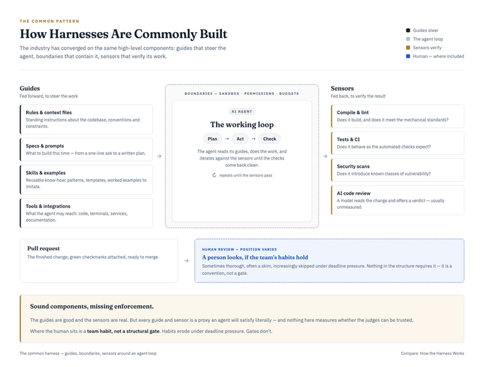
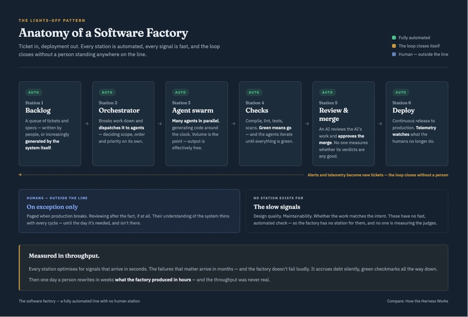

Two terms are rapidly entering the software vocabulary and they describe two very different answers to the same question: if AI agents write our code, what do we build around them to ensure quality, consistency and reliability?
Harness Engineering

A harness is defined as a piece of equipment with straps and belts, used to control or hold in place a person, animal or object. Some examples are a safety harness if you are doing bungee. Or a baby's harness. Historically, a harness was very much associated with draft animals such as horses, oxen, mules and cattle. An ox pulling a plow is typically yoked with a harness. The intent was to harness something effectively. That is: to direct, control, and use its power effectively for a purpose.
A harness in AI, is everything you put around an AI agent to shape how it works and to check what it produces. The discipline is broken into 3 parts. Guides steer the work forward. These are (a) rules and context files, (b) specs and prompts (c) skills and examples and (d) tools the agent may leverage. The second part is Boundaries - constraints for effective execution. These include sandboxes for isolation, permissions and token budgets. This ensures that the agent is constrained to run safely, but also run in a loop within some predefined resource limitations. The final part is Sensors. These verify the result. This is done with compilers, linters, tests, security scans and increasingly AI reviewers.
Harness engineering is the craft of combining these deliberately. Early evidence suggests it reduces token consumption, makes output markedly more consistent, and that specific named instructions dramatically outperform general guidance. But there's a catch: the most effective harnesses appear to be those co-developed with their backing models. Harness and model trained and tested together. That's part of why Claude Code punches above its weight, and it raises an uncomfortable question for us around our own.
Software Factory

A factory is a set of buildings where large amounts of goods are made using machines. A software factory is the same idea, where a set of systems are integrated to build, verify and release software repeatedly and at scale, with AI agents as machinery.
The software factory is the harness taken to its logical extreme: remove the humans. A backlog of work items feeds an orchestrator. An orchestrator dispatches an agent swarm to do the various parts of the work. Automated checks gate the output - AI reviews the AI's work and merges it. Deployment is continuous. And telemetry or feedback generates the next tickets. The loop runs and closes without a person standing anywhere on the line of production. Its promise is throughput. Code generation around the clock at near-zero marginal human cost.
Harness engineering will mature into a discipline - from individual craft to team practice and then platform capability, with shared harness components governed centrally and judgement federated back to the teams on the ground. Two problems will define these steps forward, sensor integrity. That is, how accurate, useful and reliable are the sensors we build. The second is, calibration - AI judges are proliferating faster than anyone is measuring them, and the harnesses that endure will be the ones that score their automated reviewers (AI) against human decisions over time and improve through it.
Software factories will find their niche and their ceiling. Factories are genuinely viable when correctness is cheap to verify, and errors are cheap to reverse - transactional back-ends, legacy rewrites governed by strong conformance test suites and internal tooling. The ceiling is structural. Today's models are trained against fast signals - does it compile, do tests pass, and are lint checks clean. However, what they do not cater for is design, maintainability, fidelity to intent and these things will surface over the months for which no automation checks. A factory has no station for slow signals, so it doesn't fail loudly. It instead accrues debt silently behind green checkmarks.
Conclusion The two concepts are not rivals so much as two settings of one dial: how much do we let an agent decide, and how we stay confident in what it does? The answer depends on the situation. If you can check the result cheaply and trust the check, the agent can be given more freedom. If checking is hard or mistakes are expensive, keep the leash short. We need to place human judgement where it matters most - saying what correct means at the start, and making the final call at the end. But we must also regularly test whether the automated judges in between can still be trusted.